📋 Общая информация
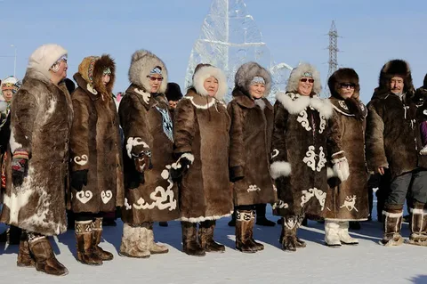
Численность
В России проживает около 480 тысяч якутов. Основное население Республики Саха (Якутия) — самого большого субъекта страны. Также проживают в Иркутской области, Чукотке.
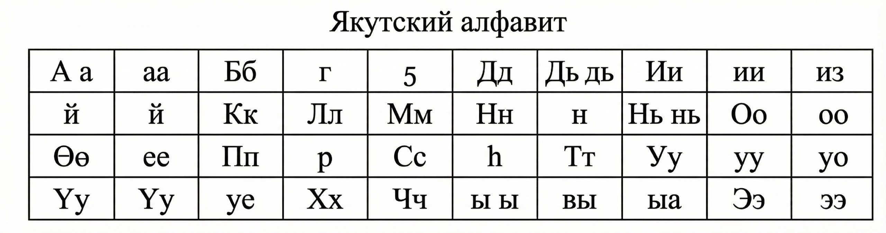
Язык
Якутский (саха тыла) относится к сибирской группе тюркских языков. Имеет много архаизмов, сохранившихся с древнекыргызского периода. Письменность на кириллице с 1939 года.
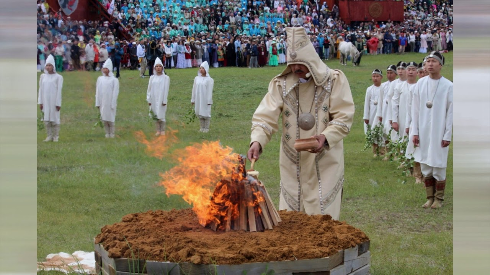
Религия
Традиционная вера — Айыы (культ духов-покровителей), с элементами шаманизма. С XVIII века распространилось православие. Сохранились древние обряды: Ысыах, поклонение огню, священным деревьям.
Расселение
Якуты населяют обширные территории Сибири от Лены до Колымы. Крупные диаспоры в Москве, Санкт-Петербурге, на Дальнем Востоке. Северные якуты — оленеводы, южные — коневоды и земледельцы.
🎭 Традиции и культура
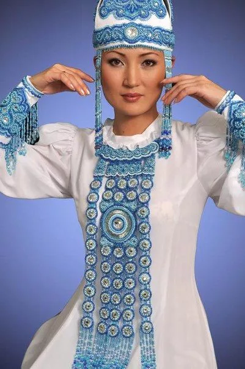
Национальный костюм
«Усун куэрт» — традиционная одежда из меха оленей и коней, украшенная бисером, металлическими пластинами, костяными бляшками. Женщины носят высокий головной убор «саха тыыы».
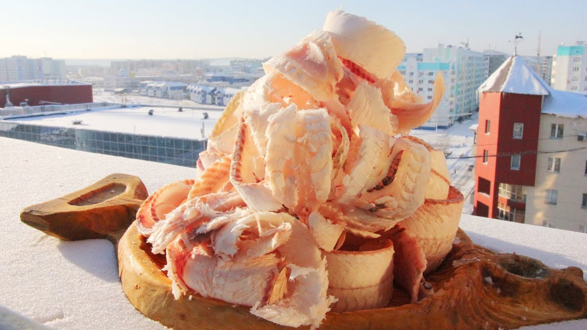
Кухня
Строганина (тонко нарезанная замороженная рыба), кымыс (кобылье молоко), мясо оленя и коня (сырое, варёное, замороженное), рыбные заготовки. Главное блюдо праздника — «салама» (кровяная колбаса).
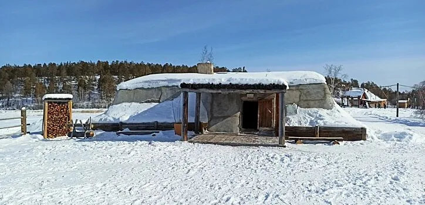
Жилище
«Балаган» — зимняя землянка с двойными стенами, утеплённая мхом и шкурами. Летом — «ураса» (лёгкая юрта). Обязательный элемент — очаг с дымоходом, символ домашнего очага.
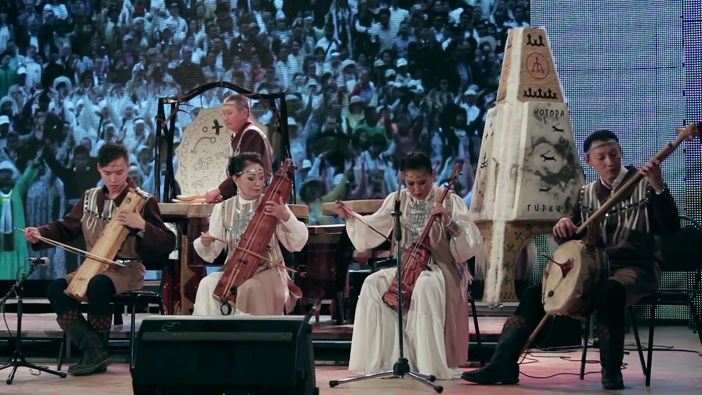
Музыка и танцы
Хомус (варган) — главный инструмент. Танец «осуохай» — круговой хоровод под пение. «Дьулус» — древний эпический жанр, исполняемый под хомус.
🎉 Народные праздники
-
Ысыах (Ыһыах)
Главный национальный праздник — встреча летнего солнцестояния. Обряд освящения кумися («алгысь»), кумысные забеги, народные игры, хоровод «осуохай», скачки.
-
День якутской лошади
Праздник коневодов. Скачки, борьба на конях, конкурс красоты среди лошадей, угощения кумысом.
-
День оленевода
Праздник северных якутов. Скачки на оленьих упряжках, конкурсы среди пастухов, обряды благословения стада.
-
Обряд Ысыах
Поклонение трём стихиям: Огню (Аан Тойон), Земле (Айыы Ийэ) и Воде (Дьахтар Айыы). Зажигание «алыс» (священного костра).
📸 Галерея
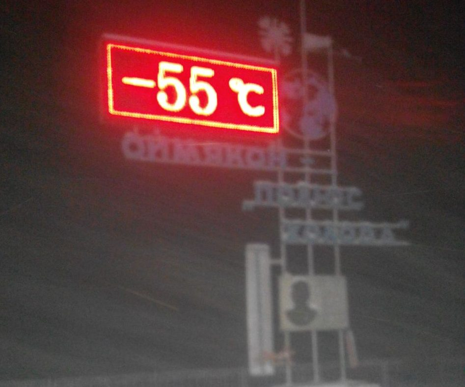
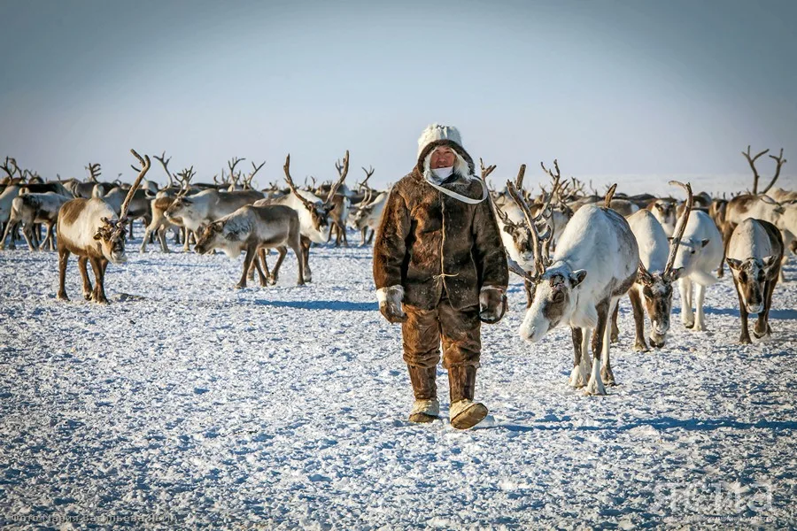
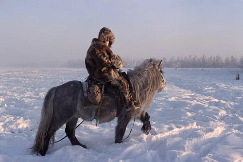
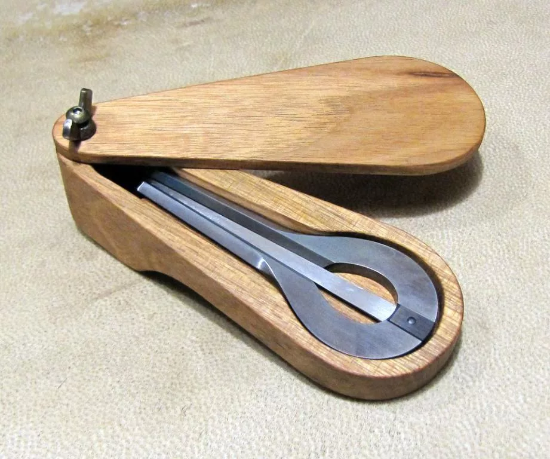
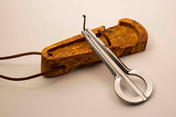
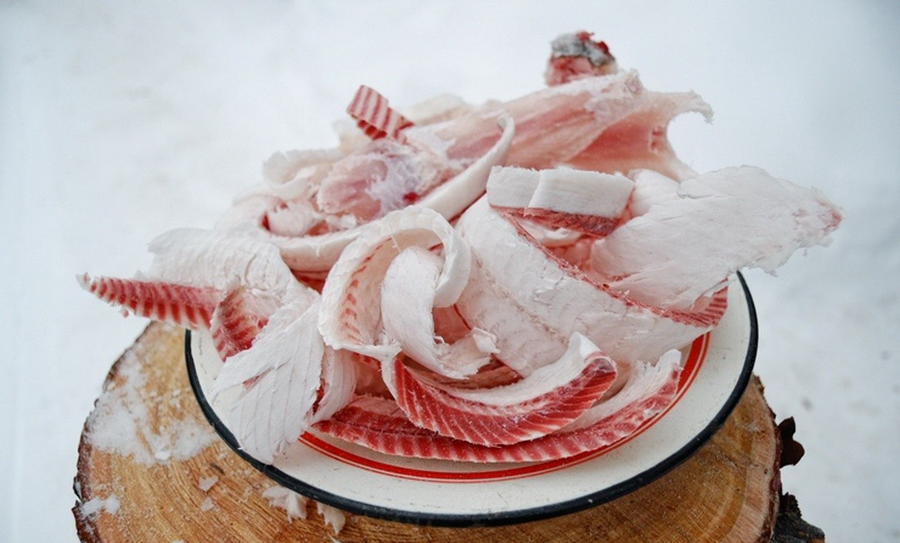
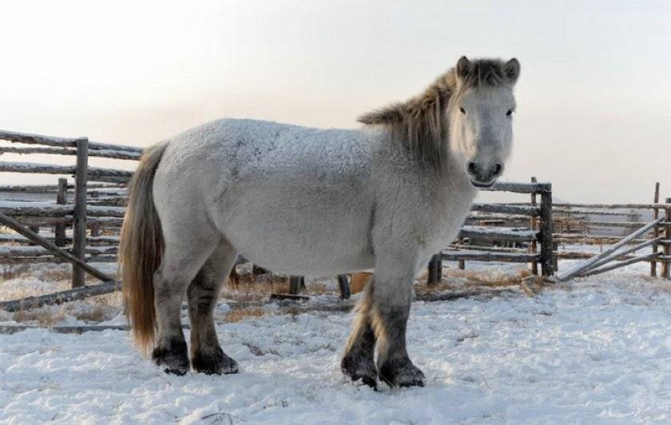
💡 Интересные факты
❄️ Полюс холода
В Якутии находятся Оймякон и Верхоянск — самые холодные населённые пункты мира. Температура опускается до -70°C.
💎 Алмазы и золото
Якутия — кладовая России. Здесь добывают 99% алмазов страны, значительную часть золота, угля, природного газа.
🎵 Хомус
Якутский варган «хомус» — уникальный музыкальный инструмент. В Якутии проводится международный фестиваль хомуса.
🎯 Викторина: Насколько хорошо вы знаете якутскую культуру?
Ответьте на вопросы на основе информации с этой страницы.